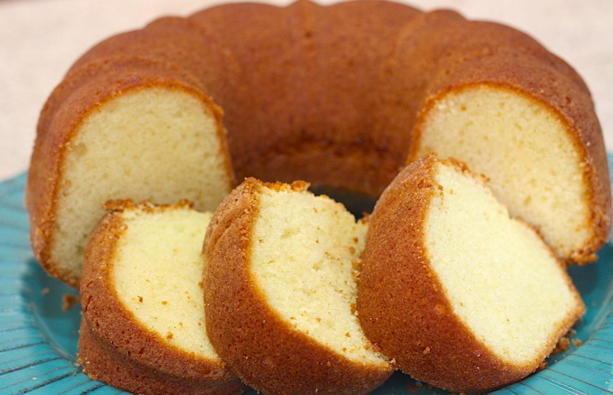

Bolo de liquidificador
Ingredientes
- 1 copo de iogurte natural (170g)
- Mesmo copo de óleo de sua escolha (160g)
- 4 ovos (208g)
- 2 xícaras de açúcar (320g)
- 2 xícaras de farinha de trigo (240g)
- 1 colher (sopa) de fermento químico (14g)
Modo de Preparo
- Separe os Ingredientes antes de iniciar a receita.
- Pré-aqueça o forno a 200°C.
- Unte uma forma com furo no centro.
-
No liquidificador, bata o iogurte, o óleo, os ovos e o açúcar até
obter um creme homogêneo.
- À parte, junte e peneire a farinha e o fermento.
-
No liquidificador, acrescente aos poucos os ingredientes peneirados
até ficar liso.
-
Coloque na forma untada, e asse a 200°C por aproximadamente 40
minutos.
- Espere esfriar e desenforme.
-
Dicas de decoração: brigadeiro, ganache de chocolate, açúcar e canela.
